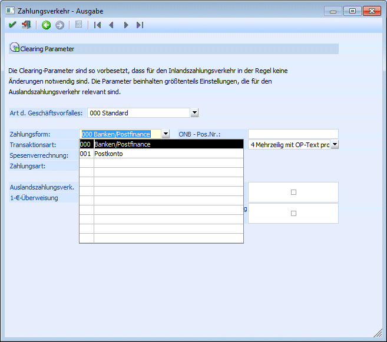
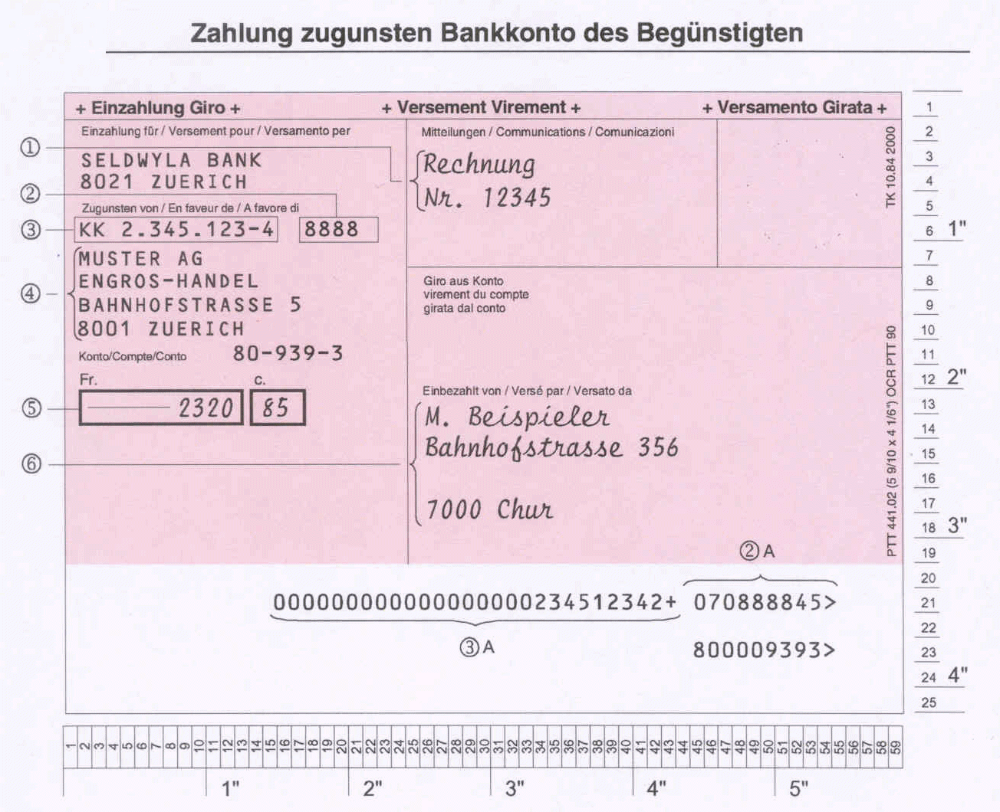
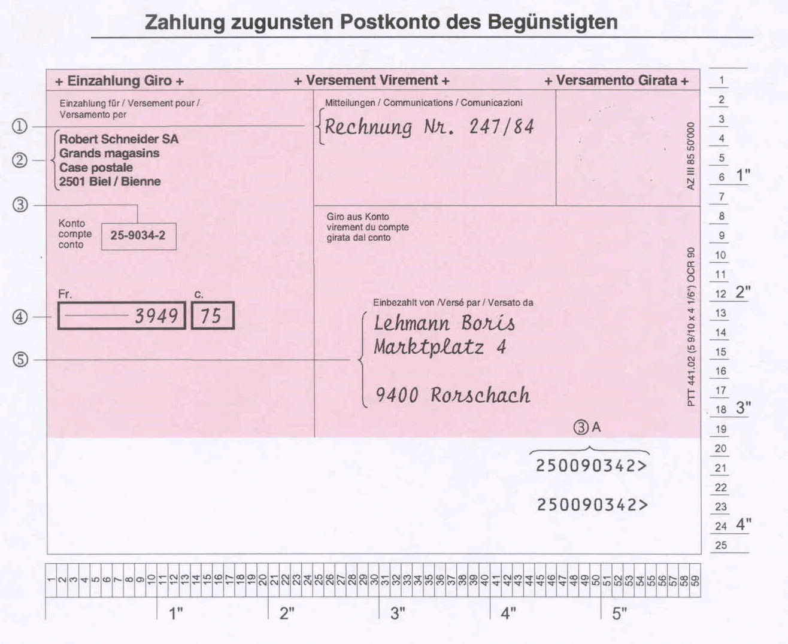

Mit dieser Transaktionsart können folgende CHF-Zahlungen im Inland ausgeführt werden, die in der Regel einem CHF-Konto bei der Bank des Auftraggebers zu belasten sind:
Beim Einzahlungsschein TA827 wird unterschieden zwischen:
ü Zahlung zugunsten Bankkonto des Begünstigten
ü Zahlung zugunsten Postkonto des Begünstigten
Um die Zahlungsarten zu unterscheiden, muss in den Clearing Parametern eine der Optionen der Zahlungsform gewählt werden:
ü 000 Banken/Postfinance
ü 001 Postkonto

Zahlung zugunsten Bankkonto des Begünstigten
Dabei handelt es sich um Zahlungen, die dem Begünstigten auf sein Bankkonto bei einer Clearingbank zu überweisen sind (Zahlungen im Bankenclearing).

Zahlung zugunsten Postkonto des Begünstigten
Bei dieser Transaktionsart handelt es sich um Zahlungen, die dem Begünstigten auf sein Postkonto oder per Mandat zu überweisen sind (Postzahlungen).
Gravierender Unterschied zur "Zahlung zugunsten Bankkonto des Begünstigten" ist, dass bei dieser Zahlungsart KEINE Bankleitzahl (BC) vom Programm in die Clearing-Datei mitübergeben wird.
Trotzdem muss bei Durchführung des Zahlungsverkehrs diese vorhanden sein (Dummy-BLZ).
